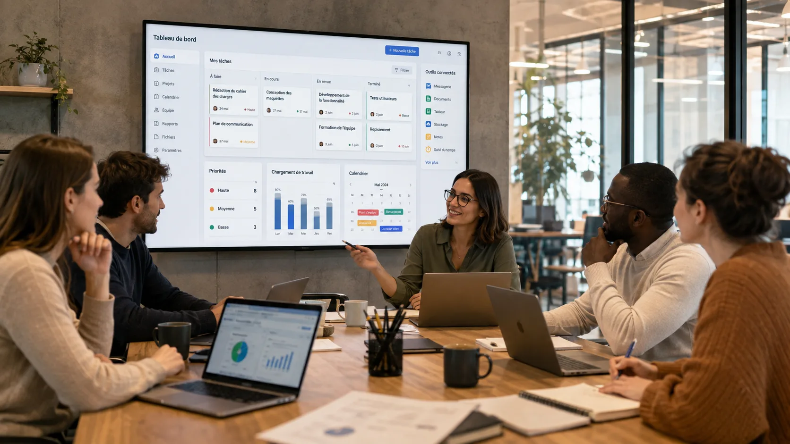
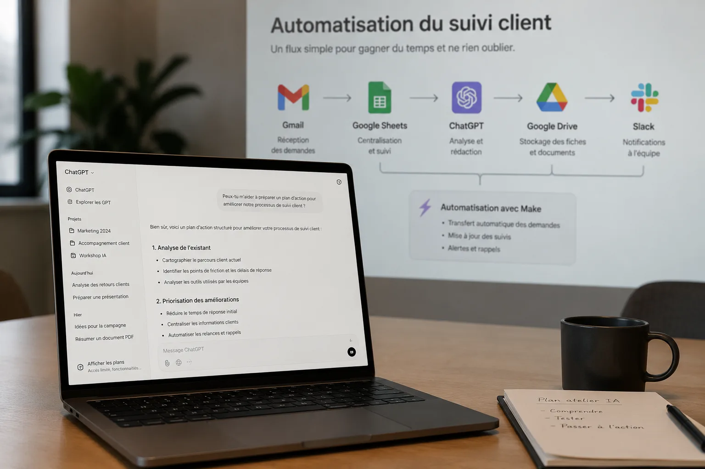

Analyse du besoin IA
Identifier où l'IA peut vraiment vous aider.
- Audit de vos outils, données et processus
- Identification des cas d'usage prioritaires
- Priorisation impact / effort
- Feuille de route claire et actionnable
Mise en place & formation IA
J’accompagne les entreprises et leurs équipes, du besoin de départ jusqu’à la mise en place des outils et à leur prise en main au quotidien.
L’avenir du travail ne sera pas façonné par l’IA seule, mais par ceux qui sauront travailler avec elle.
Services
Je vous accompagne à toutes les étapes de votre transformation.

Identifier où l'IA peut vraiment vous aider.

Passer rapidement du besoin à une première solution.
Donner à vos équipes les bons réflexes pour utiliser l'IA.
Approche
Une approche qui part du métier et relie enjeux business, outils et mise en œuvre.
Comprendre vos enjeux, vos processus et vos contraintes avant de choisir une solution.
Métier → priorités → solution
Transformer un besoin métier en solution concrète, en combinant valeur business, outils, données et adoption.
Business → outils → adoption
Projets récents
À propos
Après plusieurs années dans le conseil, la transformation et la formation — récemment comme VP Education au Wagon — j’ai créé Builder Lab pour rapprocher les besoins métier et les possibilités concrètes de l’IA.
Une approche à la croisée du business, de la tech et de la formation.
En savoir plus